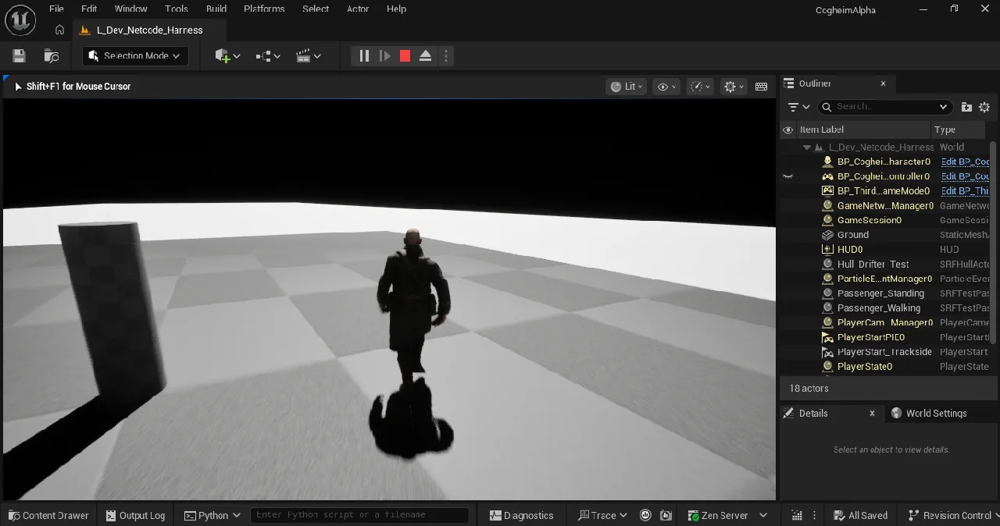
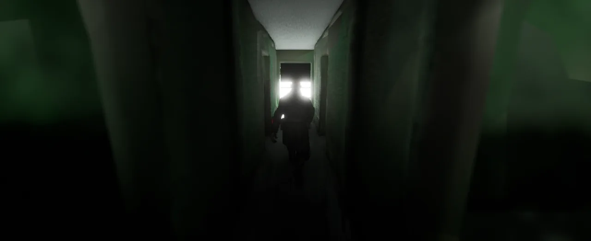
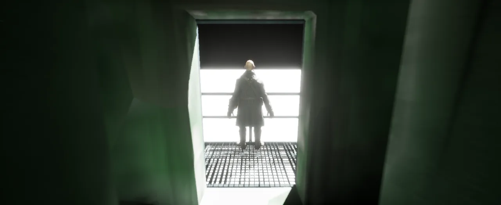

Devlog · Engine & Netcode
Between 21 and 25 September a real player boarded a moving hull, walked it, jumped on it, stepped off it and climbed back on. Here is exactly what we proved, what broke on the way, and what is still not proven.
COGHEIM's nearest milestone has a one line definition: one Strider, walkable, under way, with a player inside. We call it the vertical slice. Until a player can walk the deck of a moving hull, every number we have ever published about cities, crews or servers is a design target and nothing more.
This is the story of the week that line started to come true, told the way we keep our own records: each claim tagged with the evidence behind it.
On 21 September the test hull was rolling at 7.78 metres a second, about 28 kilometres an hour, on the shared simulation clock that every Strider runs on. We put the real player character aboard: the same character class the game uses, driven by real keys through Unreal's own character movement.
The first run looked fine until we read the counters. The server had rejected 4,163 moves in roughly 5,000 frames. The cause was a timing mismatch. The server checked each step against where the hull would be on the clock's current frame, while the engine had placed the player against where the hull was on its own last tick. Every honest step looked like a teleport. The fix was to read the hull's frame and position together as a pair, so both sides always talk about the same instant.
The second run, with the founder at the keys: walking along the deck read 4.0 m/s relative to the ship and 11.77 m/s relative to the world, with zero rejections. Walking off the edge produced one clean disembark, and walking back on produced a fresh boarding with a sane deck position, several times in a row.

Then a listen server with two clients in one process. Both clients joined, a player walked the moving deck from a client window, and the server validated every move in the ship's own frame with zero rejections.
Honest limits of that run: we never compared the client's idea of its deck position with the server's at the same moment, so client to server agreement is unverified. Between clock corrections the client's copy of the hull ran 5 to 18 percent fast and snapped back every 8 to 12 seconds. That smoothing is open work.
Jumping exposed the next problem. Every jump counted as leaving the ship, so the player was dropped and picked up again about once a second. The fix uses the engine's own setting for staying attached to a moving base while airborne, which we read in the 5.8 source before using. Six jumps in place on the moving deck afterwards: zero disembarks. Early the next morning the founder left the deck during play and the log shows exactly one disembark line, which is what should happen.
A test hull is not a Strider. On 22 September six Grindwalker meshes went into Unreal with collision on the decks, the hull set off at a slow 3.89 m/s, and the founder boarded it in play and stayed aboard for about 128 seconds. The log line that matters:
LogSRFRider: BP_CogheimPlayerCharacter_C_0 boarded SRFHullActor_1 at frame 0
No disembark line follows it before the session ends.
On 24 September it was the Drifter's turn. Its 139 parts were merged into one ride mesh of 180,667 triangles, set moving at the full 28 kilometres an hour, and a player rode it for about 134 seconds while it covered roughly 793 metres, with zero disembarks. In that run the player stood still. Walking came next.
We want to test the ship on every build without someone sitting at the machine, so we built AutoWalk: a test driver that walks the player along a scripted route on a moving hull and writes a pass or fail with every counter attached. It compiled, loaded, and passed its first route the same day: from spawn, down the corridor, out onto the stern deck and back, 8 of 8 points, with the hull under way the whole time.

Then it found real problems, which is its whole job:
To prove the grace window and not just believe it, we ran the same route both ways. Grace off: RESULT FAIL, 4 disembarks. Grace on: RESULT PASS, 8 of 8, 7 recoveries, longest gap 3 frames. The founder settled the length on 25 September: "Half second is good." That is 15 frames at the simulation's 30 frames a second.

Last, two scripted passengers on the moving Drifter on 25 September, checked purely on numbers:
What this proves: a real player can board a moving hull in Unreal 5.8, then stand, walk, jump, step off and climb back on, on one machine and on a small listen server, and the server's movement checks hold in the ship's own frame.
What it does not prove: anything about scale. One hull at a time, at most three players, no multi Strider load test yet. It does not prove client smoothness, and it does not prove the finished Drifter interior, which is still a draft. The vertical slice milestone itself is not closed: we are holding it open until the full walk circuit passes on the Drifter.
For months the moving city was a promise. This week it carried someone. Now we make it carry everyone.
← All Devlog Posts